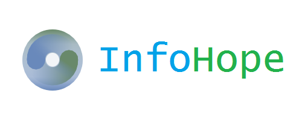

  <div id="about" class="pad-section">
    <div class="container">
      <div class="row">
        <div class="col-sm-6">
          
        </div>
        <div class="col-sm-6 text-center">
          <h2>Nós amamos informática</h2>
          <p class="lead">
            Vivemos dias em que há muita impessoalidade nos relacionamentos humanos. Fruto talvez da informática " é o que dizem " . Pensamos bem diferente deste rótulo. Acredito que a informática , pode sim e estar promovendo o bom relacionamento , entendendo e descortinando o nosso dia. Indo assim criando um novo patamar nos relacionamentos humanos. E muitas vezes revelando o interior do ser humano.
          </p>
        </div>
      </div>
    </div>
  </div>
